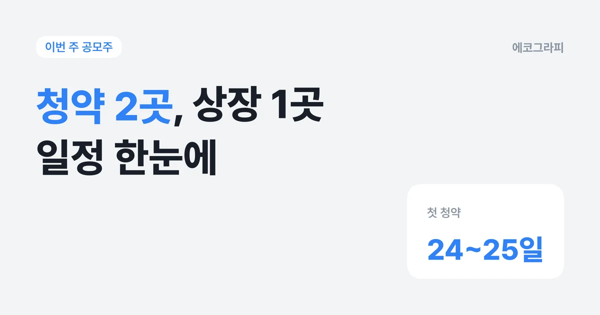
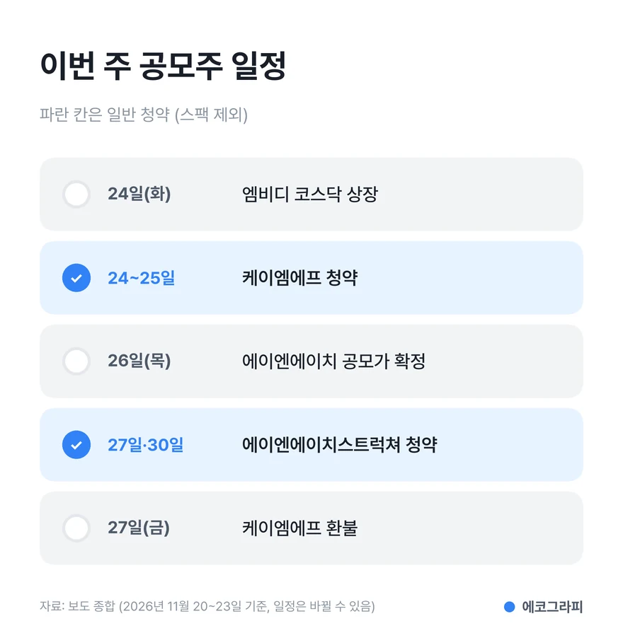
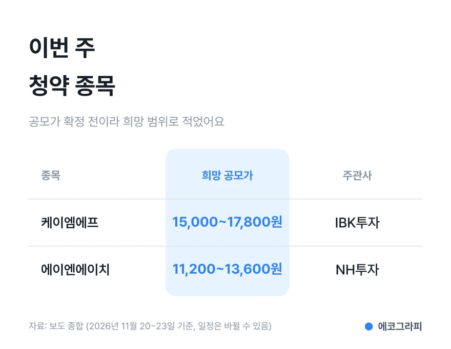
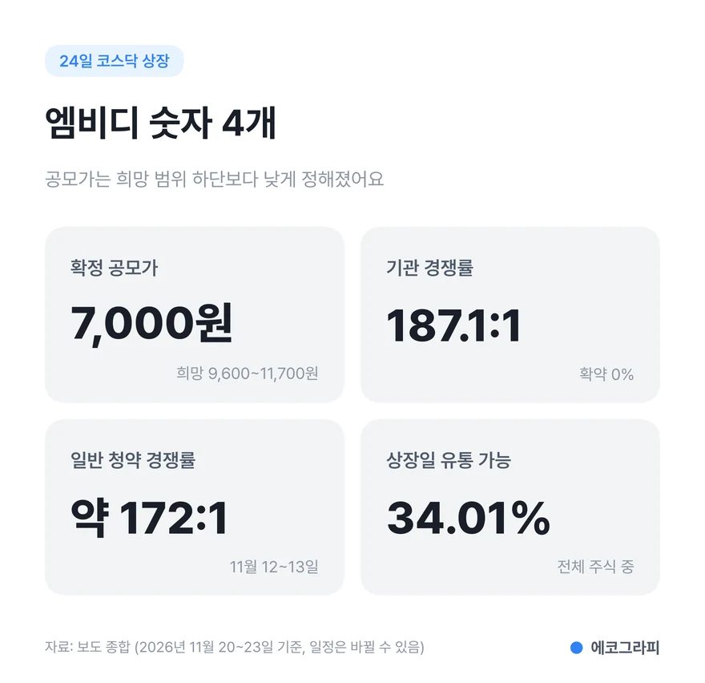
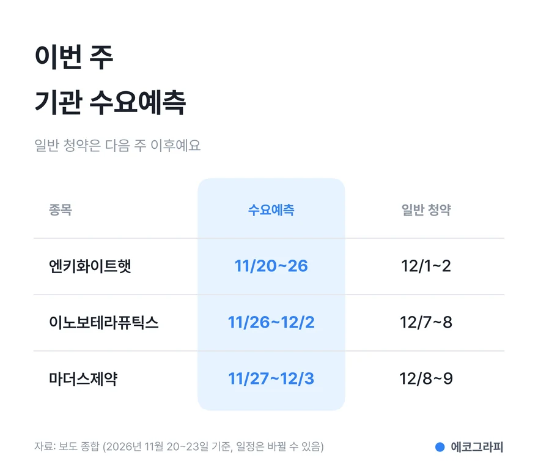

공모주가 처음이라면 공모주 청약 기초 글에서 균등·비례 배정과 증거금 계산법을 먼저 보고 오세요. 이번 주 전체 증시 일정은 오늘 아침 시황에 있어요.

확정 공모가가 나오면 볼 것: 공모가가 희망 범위 중 어디서 정해졌는지, 기관 경쟁률과 의무보유확약 비율, 상장일 유통 가능 물량이에요. 확정 숫자는 청약 첫날 아침 '청약 체크' 글에서 다시 정리할게요.
같은 기간 신영해피투모로우제12호 스팩도 24~25일 청약을 받아요. 스팩은 다른 회사와 합병하는 것이 목적인 회사라 일반 공모주와 성격이 달라요.
엠비디는 3D 세포배양 플랫폼을 만드는 회사(2015년 설립)로, 24일 코스닥에 상장해요. 공모가는 희망 범위(9,600~11,700원) 하단보다 27% 낮은 7,000원으로 정해졌어요. 공모 금액은 140억 원이에요.

기관 수요예측 경쟁률은 187.1대 1이었지만, 참여한 기관 중 의무보유확약을 건 곳은 없었어요. 일반 청약 경쟁률은 약 172대 1이었어요. 확약이 없으면 상장 직후 기관 물량이 시장에 나올 수 있어서, 상장일엔 유통 물량(34.01%)과 함께 살펴봐요.

이번 주엔 엔키화이트햇(보안), 이노보테라퓨틱스(AI 신약 개발), 마더스제약(전문의약품) 세 곳이 기관 수요예측을 진행하거나 시작해요. 일반 청약은 다음 주 이후라, 수요예측 결과가 나오면 해당 주의 공모주 글에서 다룰게요.
한편 최근 시장이 크게 흔들리면서 아델(원래 23~24일 청약 예정)이 20일 공모를 철회했어요. 그보다 앞서 에스에프씨, 제이앤티지, 씨앤엠도 공모를 철회했어요. 일정이 잡혀 있어도 이렇게 바뀔 수 있으니 청약 전에 꼭 증권사 공지를 확인하세요.
일반 청약은 공모가가 확정된 뒤에 해요. 케이엠에프는 청약 전 확정 공모가가 발표돼요. 확정 가격을 보고 청약 여부를 정하면 돼요.
공모주를 받은 기관 중 '상장 후 일정 기간 팔지 않겠다'고 약속한 곳이 없다는 뜻이에요. 상장 직후 기관이 바로 팔 수 있는 물량이 많다는 의미로 읽어요.
에이엔에이치스트럭쳐처럼 청약일 사이에 주말이 끼면 금요일과 다음 주 월요일로 나눠서 받아요. 증거금은 청약한 날 넣어요.
청약 전에 철회하면 낼 돈이 없어요. 청약 뒤 상장이 취소되는 드문 경우에도 증거금은 돌려받아요.
※ 2026년 11월 23일 기준으로 정리한 글입니다. 공모 일정과 공모가는 증권신고서 정정으로 바뀔 수 있으니 청약 전 주관 증권사 공지와 DART 증권신고서를 꼭 확인하세요. 특정 종목의 청약·매수·매도 권유가 아닙니다.